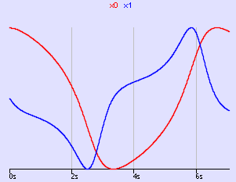

vanDerPol.fmu
This FMU implements the famous
Van der Pol oscillator
.
der(x0) = x1
der(x1) = mu * ((1 - x0 * x0) * x1) - x0

The figure shows the solution computed with Silver for start values x0 = 2, x1 = 0, mu = 1.